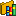

Defining the database

The database concept has a dual purpose. In itself it represents a container for
database physical concepts (such as tablespaces), but it also acts as a deployment
node by linking data models, domain models and operation libraries that have a
common target system.
In order to add a database, select project > Add > Add database > target system of
your choice.
A representation of the database is needed to connect to the physical
database.
Deployed models

Binding options
Data model 
- You can associate one data model to a database.
- This association is mandatory when using a DBMS interface. Some data
model elements can be linked to database physical objects (table,
tablespace). The application uses the data-model-to-database association to
determine the physical objects available for the link.
Domain model 

- There are two kinds of associations possible between a Database and a Domain model: User Types Model and the Default Domain Model
- This association is optional, it will not be used by a DBMS interface and can
even be misleading when you want to reuse your domains.
- The User Type Model is the User Datatype container. This association is mandatory if these types are generated by a DBMS interface.
- The Default Domain Model is the one that will be use by the different ModelSphere operation over the Database.
Operation Library 
- Only one operation library can be linked to a database.
- This association is mandatory if you plan using these concepts with a DBMS interface.
These links are used in functions (validation, forward engineering) and in
the association of model elements with database’s physical objects.
In order to be able to define tablespaces, the data model must be
linked to the database that contains information regarding those
tablespaces.